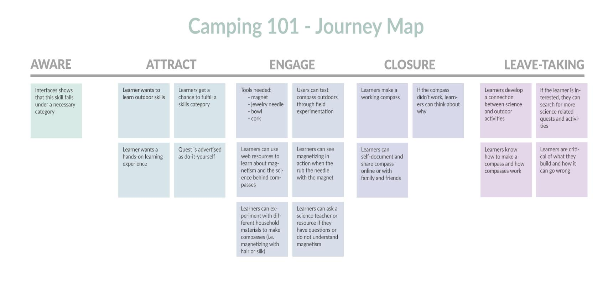

Overview
Modelling Learning Service Experiences on Mobile Phones
We were challenged by Dr. Jolene Zywica with the Open Educational Foundation (OEF) to develop a conceptual model for an educational module situated within an online mobile learning system. The purpose of the module was to incorporate problem-based learning to acquire domain specific knowledge and, in turn, support an experience that offered an effective, scalable alternative to traditional schools in the US and around the world, using globally available learning materials, mentors, peer-learning, and mobile technology.
We produced a journey map and learning design blueprint describing a learner's experience and interactions with the mobile application as they progress through the proposed learning module.
My Role : UX Design, UX Research, Learning Science
Team Members: Sruthi Ramesh, Weili Ping
Context: Learning Media Methods Spring 2015
Client: Open Educational Foundation
Research
Literature Review and Competitive Analysis
We began with a survey of learning science literature, identifying principles we wanted to incorporate into the module. We drew upon this literature to conduct a heuristic evaluation of two existing learning platforms: DIY.org and Khan Academy. In analyzing these platforms we identified a set of design precedents to inform our system design.


Design
Journey Map
We produced a User Journey Map to create a graphical representation of a user's experience through a single lesson plan.
The Journey map is organized into phases following Ervey Goffman's breakdown of face-to-face interactions to represent key interactions between the learner and learning service.
Bluprint
We developed on the touchpoints identified in our Journey Map to create a learning design blueprint, integrating user interactions with interface and back end systems of the learning module. Because our module focused on situated learning principles, we were better able to specify how the mobile learning system facilitated this learning by channeling people and places found in the learner's environment with the document.
Conclusion
We presented our design concept for Camping 101 to OEF representatives and a review panel with expertise in the learning sciences, interaction design, and educational technology. Each presentation was comprised of a 20 minutes presentation and a 5 minute review.